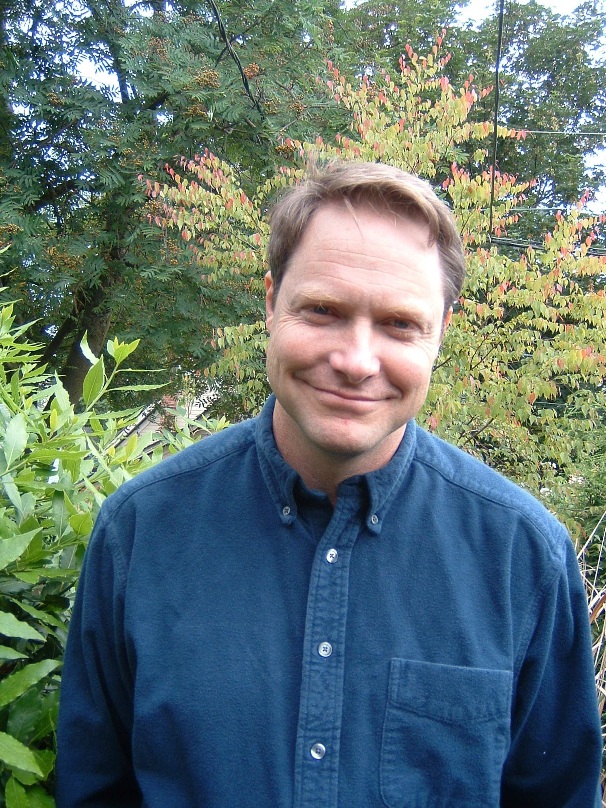
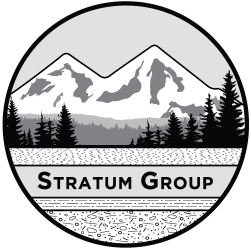

Dan McShane
Kim Ninnemann
Geoff Malick
Ben Carlson
Stratum Group is a consulting firm dedicated to providing quality
property assessments for geologic risk, contamination, and natural
resource issues. Our environmental science and geology expertise
combined with years of work in the Pacific Northwest have given us a
strong foundation in understanding the local geology, history,
environmental issues, and permit requirements.

Dan McShane is the President and senior geologist at Stratum Group and manages Stratum Group'’s geologic and environmental projects. Dan is a licensed engineering geologist with a M.Sc. degree in geology from Western Washington University and has over 25 years of geologic and environmental consulting experience.
Dan has conducted hundreds of slope stability assessments in Washington State as well as hundreds of landslide, erosion, channel migration, alluvial fan, soil liquefaction and mine subsidence hazards.Dan has been the geology lead on the development of updated best available science reports for county, city and State policy projects and has updated geology hazard regulations for several cities and counties in Washington State. He recently served as an expert witness for plaintiffs in the Oso landslide case that was settled prior to going to trial.
Dan has also completed approximately 300 phase I environmental site assessments and transaction screens over the past 10 years and is a certified site assessor for underground storage tank removals. Dan has extensive subsurface soil and ground water investigation and cleanup experience ranging from small-scale projects to multi-million dollar Superfund sites. Dan has completed over 25 environmental clean ups on contaminated sites that resulted in a "No Further Action" letters from the Department of Ecology.
Email Address: mcshanedan@gmail.com
Kim Ninnemann is a licensed geologist at Stratum Group. Kim has B.Sc. degree in geology from Western Washington University and has 20 years of environmental consulting experience. She has visited hundreds of sites to conduct environmental due diligence and risk assessments, overseen numerous sampling and cleanup projects, and has received many “no further action” determinations from Ecology. Kim became a partner at Stratum Group in 2005. Kim is a Washington State Lead Risk Assessor and a certified site assessor for underground storage tank removals.
Email Address:kim@stratumgroup.net
Geoff Malick is an associate geologist at Stratum Group. Geoff joined Stratum Group in mid-2017 after completion of a master's degree focused on geomorphology and engineering geology as related to landslides and slope stability. His graduate coursework in applied geology and master's thesis on a large bedrock landslide complex in Whatcom County allow him to bring new perspectives to our geology team. His undergraduate project focused on the helping decipher the glacial record of Maine, in which he mapped and characterized features and geologic units very similar to those found in NW Washington.
Since joining Stratum Group, Geoff has completed hundreds of geologic hazard assessments throughout NW Washington and the Puget Sound region. He has also completed a critical areas code rewrite for the City of Duvall, produced landslide and erosion hazard maps, aided in a forest practice application review, and completed Phase I environmental site assessments..
Email Address: geoff@stratumgroup.net
Ben Carlson is an associate geologist at Stratum Group. Ben joined the Stratum Group team in early 2019 to support our expanding environmental and geologic client base.
Ben began his work in geology doing undergraduate research aimed at improved scientist’s understanding of Alaskan mountain building and tectonic processes. Ben completed his master’s degree at Western Washington University in Bellingham in 2017, where his research focused on working to better understand the earthquake hazard facing the eastern Cascade Range through fault mapping, trenching, and GIS analysis. He went on to work for nearly two years at a prominent consulting firm in Seattle conducting and aiding in dozens of geotechnical and environmental investigations around the many diverse environments encountered in Washington State.
Ben has completed nearly 100 environmental site assessments throughout western Washington, including more than a dozen soil and groundwater sampling investigations, since returning to Bellingham and joining Stratum Group. Ben has also assisted in the design and implementation of several environmental cleanup activities remediating petroleum and metals contamination on a variety of property types. Ben is continuing his growth learning the finer points of slope stability analysis from Stratum Group colleagues.
Email Address: ben@gmail.com